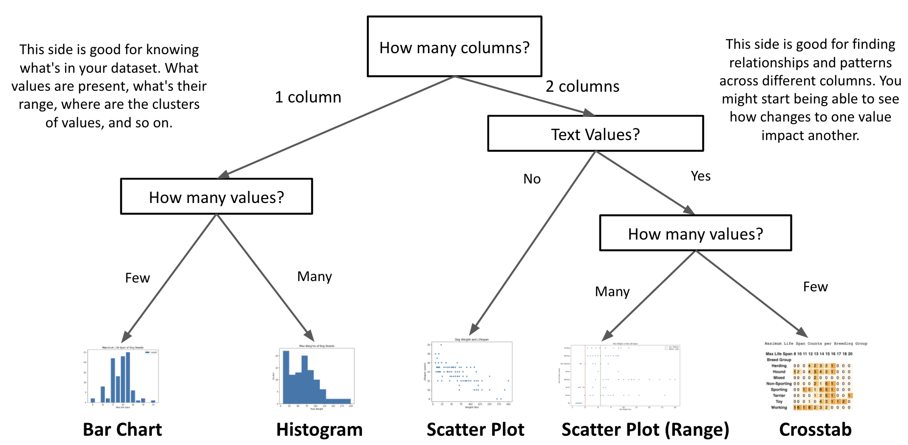

Lesson 10 - Choosing a Chart
At the end of this lesson, you will be able to:
- Choose the correct chart type for visualizing a dataset.
Chart types
At this point you've got a whole toolbox of charts for categorical and quantitative data - the question now is which one to reach for. It mostly comes down to how many columns you're looking at:
Are you using one column of data?
- Bar Chart: Bar charts compare a number - a count, a frequency, an average - across discrete categories of data. (How many? What percentage?)
- Histograms: Like a bar chart, but for numbers grouped into ranges - the height of each bar shows how many values fall into that range. Reach for one when a bar chart would have far too many categories. (What percentage/how many are between this and that?)
Are you trying to show the relationship between two columns of data?
- Scatter Plot: Scatter plots shine when you have lots of data points and want to see the relationship between two variables (one on the x-axis, one on the y) - a person's weight and height, say. (Are heavier people also taller?) They can also be used to make a range chart when one column is categorical.
- Crosstab: For counting combinations - one column must be categorical data (text). (How many/what percentage of people have green eyes?)
And when in doubt, the diagram below walks you through the decision:
